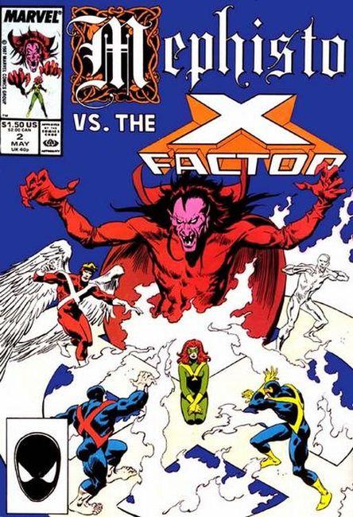
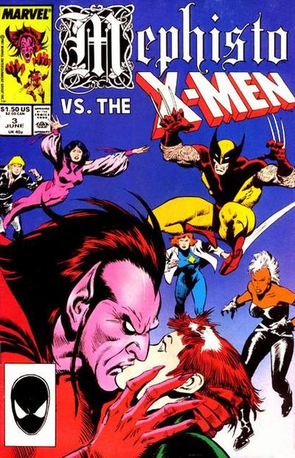
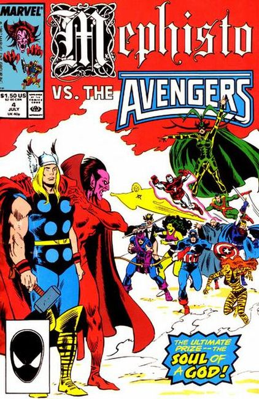

Mephisto vs. the Fantastic Four - "Give the Devil his Due!" Story by Al Milgrom. Art by John Buscema and Bob Wiacek. No being in the Marvel Universe personifies evil more than the malevolent lord of the underworld - Mephisto. This sinister demon sets out on a machiavellian quest that will set him against some of the Marvel U's bravest and brightest heroes. First up - the Fantastic Four. Can Mephisto accomplish what Doctor Doom, Diablo, and Annihilus could not? Can he tear apart Marvel's First Family?

Mephisto vs. X-Factor - "Sympathy for the Devil!" Guest-starring Mister Fantastic and the Invisible Woman. Story by Al Milgrom. Art by John Buscema and Bob Wiacek. The fiendish lord of the nether realm, Mephisto, has trapped the Invisible Woman of the Fantastic Four in his dark domain below. However, this is all just part of a grander scheme. Now the next stage of Mephisto's grand scheme involves the mutant heroes of X-Factor. Can the original X-Men - Cyclops, Ice Man, Beast, Angel, and Jean Grey - succeed where the Fantastic Four have failed? Can they defeat evil incarnate?

Mephisto vs. the X-Men - "The Devil You Say!" Guest-starring Jean Grey. Cameos by the Fantastic Four and Cyclops. Story by Al Milgrom. Art by John Buscema and Al Milgrom. Mephisto's mysterious quest has brought him to Charles Xavier's School for the Gifted, home of the Uncanny X-Men. He has already traded one captive for another (the Invisible Woman for Jean Grey; see last issue). Who will be the next victim in this sinister fiend's unknown quest? Are the Children of the Atom Mephisto's ultimate prize, or just another stepping-stone?

Mephisto vs. the Avengers - "His Satanic Majesty Request!" Guest-starring the X-Men. Story by Al Milgrom. Art by John Buscema and Bob Wiacek. At long last, Mephisto's ultimate goal is revealed! In the aftermath of his epic battle with the Midgard Serpent (see Thor (Vol. 1) #380), the Mighty Thor lays broken, battered, and at death's doorstep. Using the X-Men's Rogue's mutant ability, the fiendish demon lord will seize this opportunity to obtain the ultimate prize - the soul of a god! The only thing standing in his way is Earth's Mightiest Heroes. In this exciting conclusion, the east and west coast Avengers assemble to take on the Marvel Universe's most devilish adversary, and the fate of the Thunder God's very soul hangs in the balance.